A Filha de Fangwild
A filha do Fangwild não é para brincadeiras.


Nenhum mortal viu o centro da Floresta Fangwild. A magia é muito densa, o perigo é muito profundo. Não os elfos que vivem nos limites de Fangwild. Não os aventureiros e tolos que desbravam a floresta em busca de caminhos para outros universos. Não os carniçais e feras atraídos pelo chamado da magia. Nenhum mortal, exceto Ember. Por milhares de anos, Ember caçou os caminhos em constante mudança do Fangwild. Com o lobo Ash e seu corvo Yarra, ela protegeu Fangwild de si mesma e protegeu os mundos fronteiriços da floresta mística. Ela lutou contra os Primordiais. Ela fez amizade com um Minotauro solitário. Ela resgatou um Viking furioso perdido no fundo do coração de Fangwild. Ela montou um dragão selvagem através do turbilhão no coração da floresta. Antigamente, antes de Valhalla, as fronteiras de Fangwild tocavam até mesmo Asgard, e Ember caminhava com os primeiros guerreiros entre as poderosas árvores que formariam suas vigas. Agora, em meio à glória de sua vida após a morte em Valhalla, a mente de Ember está fixada no Fangwild, e o Fangwild lamenta sua filha. Com Ember indo para Valhalla, o Fangwild caiu na loucura. Retorcido e intransponível, sua selva ameaça se espalhar pelos muitos reinos que toca. Ember sabe que existem caminhos de e para Valhalla. Ela luta no torneio, esperando que na vitória ela possa encontrar um caminho de volta e acertar as coisas em sua casa na floresta.
 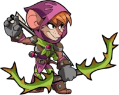
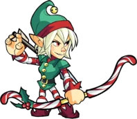
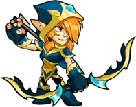
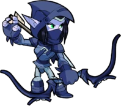
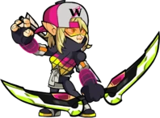
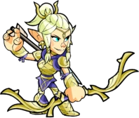
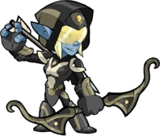
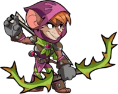
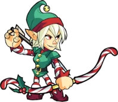
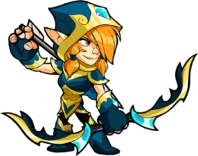
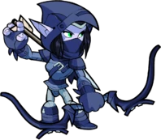
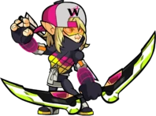
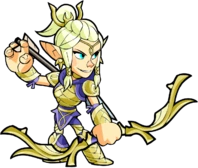
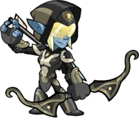